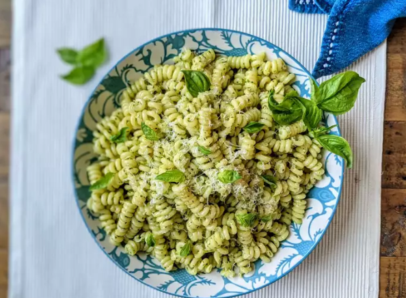

Pesto Pasta

Description
Pesto pasta is easy to make and full of flavor. It tastes good hot or cold!
Ingredients
- Pasta: Start with your favorite pasta shape.
- Onion and oil: Cook the onion in olive oil until it’s translucent.
- Pesto: Use store-bought or homemade pesto sauce.
- Seasonings: This pesto pasta is simply seasoned with salt and pepper.
- Cheese: Grate your own Parmesan cheese instead of using the pre-shredded stuff.
Steps
- Boil the pasta in salted water and drain.
- Cook the onion in oil, then stir in the pesto and seasonings.
- Add the pesto mixture to the hot pasta and toss with cheese.
Home